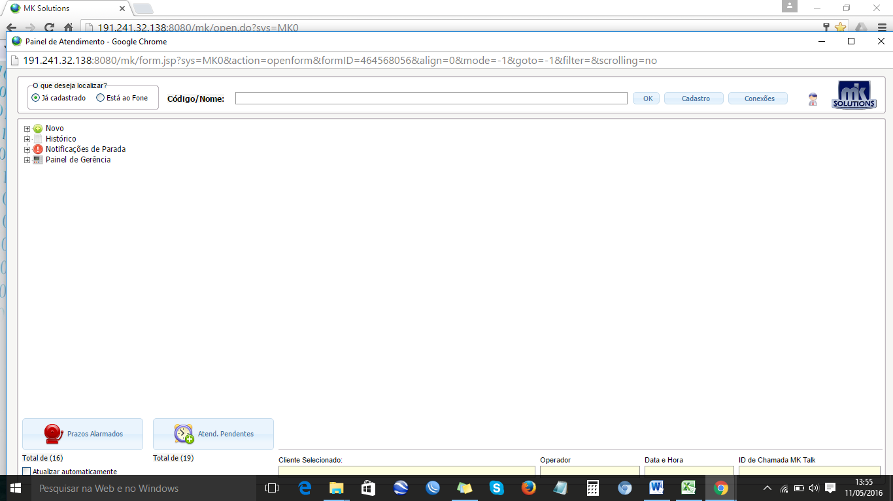
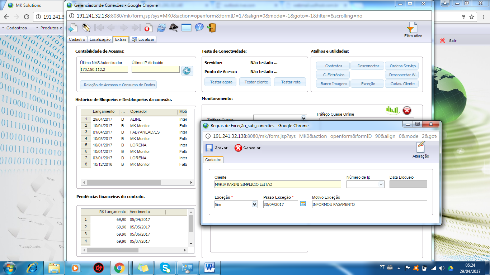
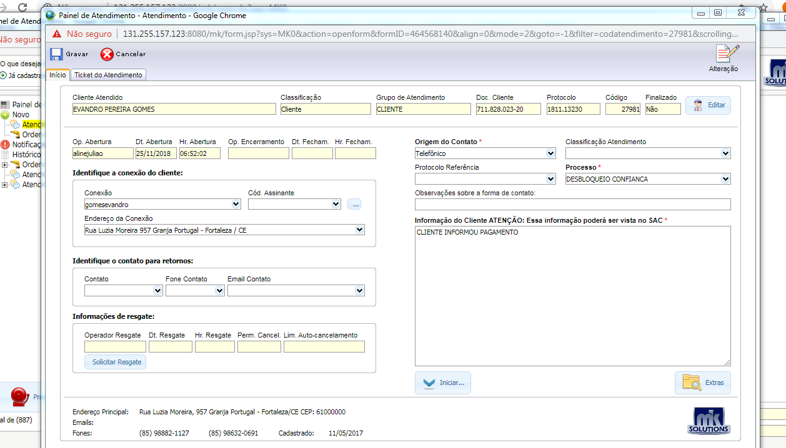
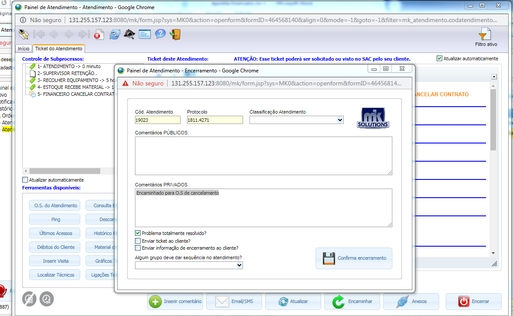

Voltar
Voltar
Desbloqueio
- Financeiro Agily Telecom (nome + comprimentos)
- Confirmar as informações cadastrais
- Qual o nome do titular do contrato?
- Acessar o mk Solutions a aba, Suporte / Painel de atendimento e serviço/ painel de atendimento
- Na aba Código/ Nome; informar o nome do titular e clicar ok
- Clicar na aba cadastro e confirmar os dados

- Qual Endereço e cep ?
- telefones para contato ( Obs.: Atualizar os números )
- Qual watsap ?
- Qual o e-mail ? (Obs.: Atualizar e-mail ou colocar não tem)

Desbloqueio de conexão - motivo de Pagamento
Fazer as seguintes verificações:
- Verificar se já constou o pagamento: Na aba Financeiro / Painel de contas e Faturamento
Se o pagamento já estiver liquidado pelo sistema, informar ao cliente que já houve o desbloqueio e pedir para testar.
Se o cliente estiver informando pagamento; Ir na aba cadastro/conexões
OBS: Verificar em, conexão, extra Histórico de Bloqueios e Desbloqueios da conexão Do cliente se já houve desbloqueio manual pelo operador nesses mês, e o sistema voltou a bloquear por motivo de não pagamento. Caso tenha havido, informar ao cliente que o desbloqueio só ocorrera após a confirmação do pagamento.
Fazer o desbloqueio manual :
- Em status da conexão: desmarcar o campo bloqueado
- Em motivo do bloqueio: deixar o campo em branco

-
Clicar na aba extra, Exceção, preencher as seguintes informações.
Exceção/ sim, Prazo exceção / colocar 2 dias, Motivo do pagamento / Informou pagamento
Obs: quando o cliente informar o pagamento no Sábado, o prazo da exceção será ate terça feira da próxima semana.

Abertura do ticket:
Após essas verificações, selecionar a aba novo e preencher os campos no painel de atendimento:
Origem do contato= telefônico
Processo = Desbloqueio Confiança
Informação do cliente = Relatar a solicitação do cliente, a confirmação do cpf,o motivo, horário de disponibilidade, Gravar e Iniciar.

Encerrar o ticket
- Na aba painel de atendimento/ Seleciona a aba Ticket de atendimento, clica em encerrar, coloca o comentário do atendimento em comentários públicos e Confirmar o encerramento.

- Informar ao cliente que a conexão será liberada em 5 min
- Finalizar o atendimento
Voltar